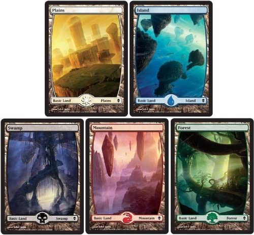

|  |
Aquí tenemos el ejemplo de lo que se llama land en el juego de Magic, cada una de ellas representa uno de los
colores de mana: azul, blanco, negro, rojo y verde, cada color tiene un atributo, una fortaleza y una debilidad por asi decirlo,
este tipo de carta se utiliza para generar lo que se conoce como Mana dentro el juego, el Mana es utilizado para pagar los costes
de juego de las distintas cartas o habilidades de las cartas criaturas, encatamientos, artefactos o planewalkers, el Mana se obtiene
girando o tapando  las cartas land dependiendo de los costes requeridos para jugar o activar habilidades,
los colores de cada land indica el Mana que puede producir, sin embargo el mana generico las cartas land dependiendo de los costes requeridos para jugar o activar habilidades,
los colores de cada land indica el Mana que puede producir, sin embargo el mana generico  puede ser pagado con cualquier color de mana,
sin embargo si un hechizo ocupase mana especifico como por ejemplo podras utilizar cualquier color
para pagar el mana generico, sin embargo tendras que tapar un mana correspodiente al swamp para jugar dicho hechizo. puede ser pagado con cualquier color de mana,
sin embargo si un hechizo ocupase mana especifico como por ejemplo podras utilizar cualquier color
para pagar el mana generico, sin embargo tendras que tapar un mana correspodiente al swamp para jugar dicho hechizo. |